2 wks → 2 days
After our QA team moved testing onto AI-assisted tools, from mid v2.3.0 to v2.4.0.
v2.3.0 startv2.4.0 ✓v2.5.0v2.6.0 ongoing
Jodie WantonoQA & Test Automation · Product · PMOJakarta · 中文 · ID · EN
Six years across product, PMO and QA, the last three in fintech. I know the business flow end to end, so I know what to test and why, and I build the automation that tests it.
Looking for QA Lead, Test Automation Lead or QA Manager roles, based in Jakarta.
Where I've worked and studied
Impact
After our QA team moved testing onto AI-assisted tools, from mid v2.3.0 to v2.4.0.
down from about a month of testing
late deliveries
stuck parcels, with better SLA
first fund feature launched; major improvement in Aug 2024
Product, PMO and QA. Government bonds with DBS APIs delivered in 2025.
中文 native-level · Bahasa native · English working proficiency
I help QA teammates set up and use the same AI tools.
Selected work
The headline and the number here; open a project for the context, user stories, decisions, screens and results.
Quality engineering · Tuntun Sekuritas · 2026
An internal QA tool and an all-in move to AI-assisted testing cut regression from two weeks to two days.
Read the case →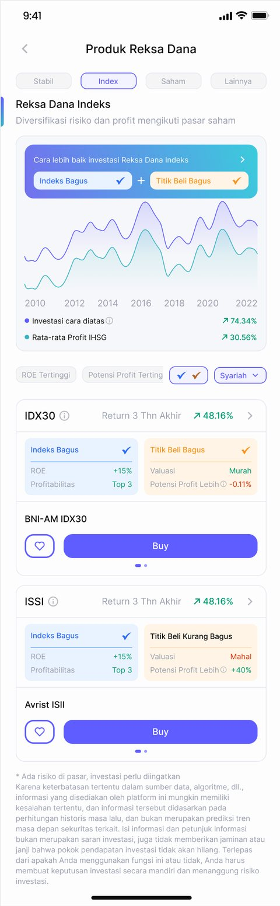
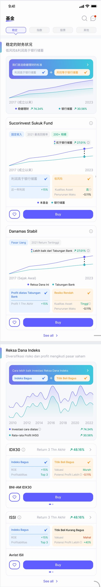
Fintech product · Mutual funds · 2023 – 2024
My first project: funds grouped by goal, with two checks before you buy. First launch Dec 2023.
Read the case →Fintech product · Government bonds · 2025
DBS API integration and a full settlement flow, from order booking to payout. Delivered in 2025.
Read the case →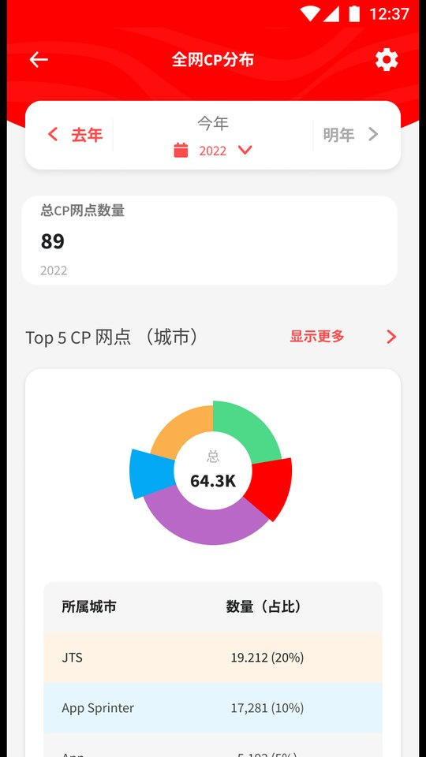
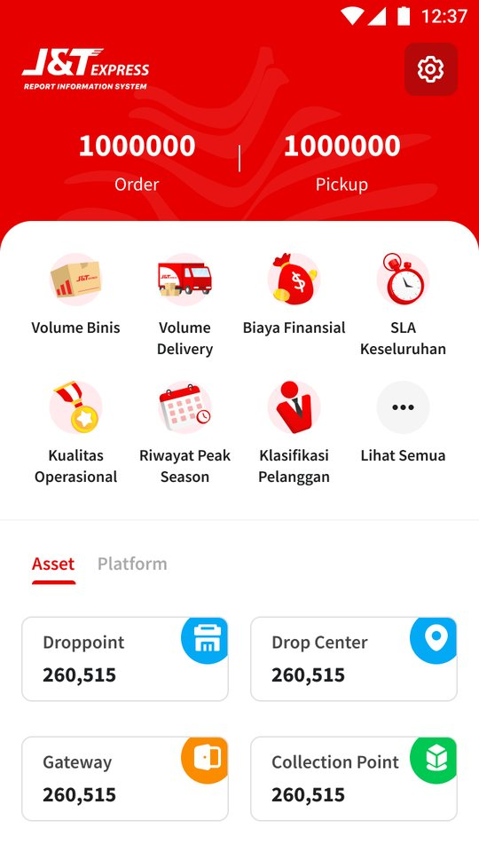
Logistics product · J&T Express · 2021 – 2022
From my 2021 proposal to V1.0 on web, Android and iOS. Stuck parcels fell 60–70%.
Read the case →late deliveries
PMO · Tuntun Sekuritas · 2025
One board, one SOP and one weekly rhythm for every requirement, from MRD to live.
Read the case →Logistics platform · J&T Express · 2021 – 2023
How do you rebuild a platform while clients keep shipping on it?
Phase by phase, moving clients over without a hard cutover. By Dec 2022: 24,892 active VIP clients, from Sumatra to Maluku.
Read the case →How I work
The same habit in every role: make the work visible, then make it repeatable.
See it in practice: QA Hub →
See it in practice: Mutual funds → Government bonds → JRIS →
See it in practice: PMO tracking board →
Experience
I started as a business product manager for mutual funds at Antai Securities Limited and moved to Tuntun Sekuritas in 2024. There I moved to the PMO, returned as a product manager (still tracking my own timelines the PMO way), and then moved fully to QA.
PT Tuntun Sekuritas Indonesia
PT Tuntun Sekuritas Indonesia
PT Tuntun Sekuritas Indonesia
Antai Securities Limited, then PT Tuntun Sekuritas Indonesia from 2024
PT Global Jet Express (J&T Express)
National Taiwan Normal University
How I contribute
Quality engineering · Tuntun Sekuritas · 2026
Our QA team moved testing onto AI-assisted tools over several releases, and I built an internal QA tool from my own daily testing experience. Regression went from two weeks to two days.
Every release needed weeks of repeated manual testing across five surfaces.
Went all-in on AI-assisted testing from mid v2.3.0 and built QA Hub to hold the whole workflow.
Regression in 2 days instead of 2 weeks; large projects in 3–4 days instead of a month.
Tuntun Sekuritas ships its trading app in numbered releases. Each release has to be tested on the API, Android, iOS, the web app and the internal Admin Console before it goes out. I test those releases as part of the QA team.
Regression testing took about two weeks per release, and a large project took around a month to test. Much of that time was repeated manual work: writing cases from the PRD, preparing the same flows in the Admin Console, and switching between Jira, Confluence and Figma.
The "users" here are the QA team, including me.
As a QA engineer, I want test cases drafted from the PRD, so that I spend my time reviewing coverage instead of typing cases.
→ AI test case generator, with a person reviewing every draft.
As a QA engineer, I want the ticket, the PRD and the design next to my tests, so that I don't lose time switching tools.
→ Jira, Confluence and Figma integration in one place.
As a QA engineer, I want repeated Admin Console flows to run by themselves, so that a retest doesn't need manual clicking.
→ Playwright automation of Admin Console flows.
As the team, we want campaign features that can be retested quickly, so that late changes don't block the release.
→ Automation for the 2026 campaign features.
As a QA peer, I want to learn the same setup, so that the whole team gets faster, not just one person.
→ I show colleagues how to set up the AI tools and encourage them to work the same way.
Regression testing dropped from two weeks to two days, and a large project from about a month to 3–4 days. The 2026 campaign features passed acceptance testing, and I am helping teammates set up the same tools.
Fintech product · Antai Securities Limited → Tuntun Sekuritas · 2023 – 2024
Invest by goal, not by fund name: turning a list of funds into a guided decision about what to buy, when to buy it, and what you own.
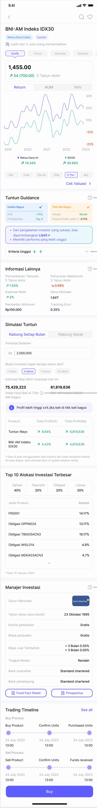
In 2023 Tuntun added mutual funds to an app people mostly used for stocks. A fund catalogue lists many products by name, each with its own return chart, fees and fund-manager details. For someone new to funds, that is a lot to read before the first purchase.
Help an investor pick the right type of fund for their goal, see whether now is a sensible time to buy, and understand what happens after they buy, without needing a finance background.
To get this shipped, I took on more than requirements:
The designer chose the colours and finalized the visual UI.
"How might we help a first-time investor choose a fund by goal, know when to buy, and understand what they own, without needing a finance background?"
Understand what you're looking at in seconds: one promise per category, plain words for every metric.
Turn screening into two simple checks: is it good, and is it a good time?
Measure funds against what people already hold: savings accounts, deposits, the market index.
Show the timeline after buying and the details behind each fund, so nothing feels hidden.
Solution 1 · Home · also in 中文
User storyAs a first-time investor, I want funds grouped by what they do for me, so that I can start without knowing fund jargon.
Four categories replace a long list of names: Stable (lower risk, more than a savings account), Index (follow the market), Equity (highest growth) and Others. Each has a one-line promise and a chart against its benchmark.
Solution 2 · Index funds
User storyAs an investor choosing an index fund, I want to know if the index is good and if the price is good today, so that I don't buy a good index at a bad time.
Every card carries Indeks Bagus (ROE and profitability rank) and Titik Beli Bagus (valuation and potential upside), with a chart comparing this approach with the market average. Equity funds use the same pattern: a good fund manager plus a good entry point.
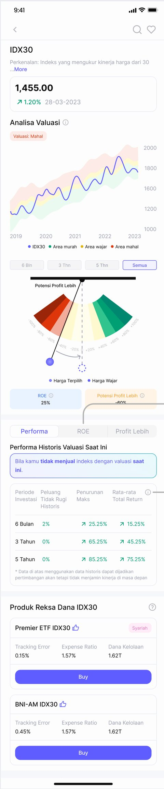
Solution 3 · Index valuation
User storyAs an investor, I want to see if an index is cheap, fair or expensive right now, so that I can time my entry instead of guessing.
A chart shades the cheap, fair and expensive areas over time, a gauge shows the potential extra profit, and a table shows past returns when the index was bought at today's valuation. The funds that track the index sit underneath, ready to buy.
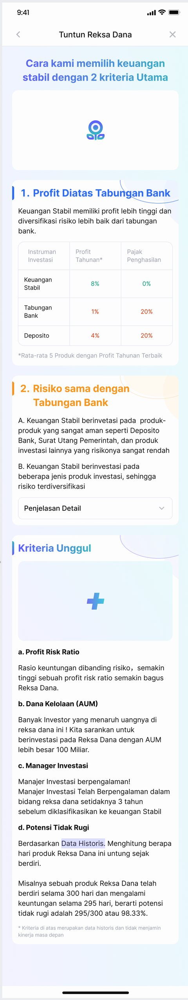
Solution 4 · Stable funds
User storyAs a saver with money in the bank, I want to compare a stable fund with savings and deposits, so that I know the extra return is worth it and the risk is similar.
A guide explains how stable funds are picked with two criteria (profit above a savings account, risk similar to one), compares yearly profit and tax side by side, and lists the selection rules: investment-grade assets and short maturities.
Solution 5 · Fund detail
User storyAs an investor on a fund page, I want performance, guidance, a savings simulation, holdings and settlement timing in one place, so that I can decide and know when my units arrive.
One scroll covers the NAV chart against the index, the two checks, Simulasi Tuntun (monthly or one-time investing), top-10 holdings, the investment manager and custodian, the fact sheet and prospectus, and a trading timeline for when units are confirmed and sale proceeds arrive.
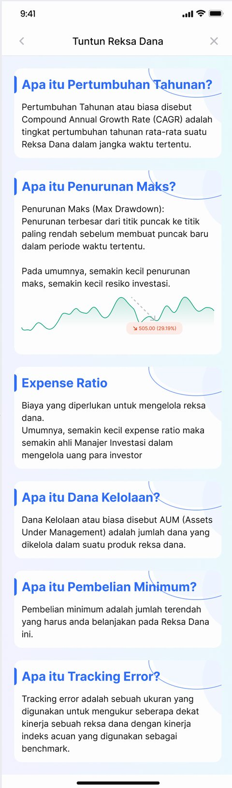
Solution 6 · Tuntun Reksa Dana guide
User storyAs a new investor, I want plain explanations of CAGR, max drawdown, expense ratio, AUM and tracking error where they appear, so that I can read a fund page without searching elsewhere.
A ? next to each metric opens a short explanation in plain Bahasa Indonesia, with a small chart where it helps.
Fintech product · Government bonds (SBN) · 2025
I led the DBS third-party data API integration and designed the full settlement flow so customers can buy, hold and sell government bonds in the app.
Bonds needed a full transaction path in the app, from booking to payout, using outside data.
Led the DBS API integration and designed the settlement flow end to end.
Delivered in 2025, tested with QA and UAT before release.
As an investor, I want to book and buy a government bond in the app, so that I don't need another channel.
→ Order booking and purchase steps.
As an investor, I want to see my bond holdings, so that I know what I own.
→ Holdings display.
As an investor, I want to sell and receive the proceeds, so that the investment is easy to exit.
→ Sell and payout of proceeds.
As the settlement team, we want every order to follow one defined flow, so that bond offerings run smoothly.
→ One settlement flow agreed with Settlement and Business.
Delivered in 2025. I also supported domestic and foreign customers with bond purchases, in line with OJK regulations.
Logistics product · J&T Express · 2021 – 2022
From exported spreadsheets to one live reporting system on web, Android and iOS, built to hold up in peak season. Stuck parcels fell 60–70%.
Management relied on staff exporting data and compiling reports by hand. Every new report meant more hours and people, and peak season needed numbers during the day.
Led JRIS from the first proposal to V1.0: product and API requirements, the UX in the PRD, and following each module through development with J&T's design and engineering teams.
Stuck parcels fell 60–70% and service level improved. Peak-season monitoring became a key indicator for planning staff for the next peak.
J&T management asked staff to export detailed data from the system and compile statistics by hand. As the company grew, every new report dimension meant more data, more hours and more people, and reporting kept getting slower.
Give management daily, monthly and yearly numbers without manual exports, on the devices they actually use, and make them hold up during peak season, when volume spikes and parcels are most likely to get stuck.
I led JRIS from the first slide to V1.0, working with J&T's design and engineering teams:
The J&T designer chose the colours and finalized the visual UI.
"How might we give J&T managers live, trustworthy numbers on any device, so they can act during the day, especially in peak season, instead of waiting for a manual report?"
The most important numbers on the first screen, today against yesterday.
Targets, forecasts, a countdown and warnings in one report.
HQ, agent areas and franchise partners each see their own view.
Layered login security and a clear way to report problems.
Solution 1 · Home
User storyAs a regional manager, I want live order and pickup counts on my phone, so that I see problems during the day, not the next morning.
The home screen opens on today's orders and pickups, with every report one tap away and a peak-season countdown when a peak is running. On Android, a floating window keeps the counts on screen while the manager uses other apps.
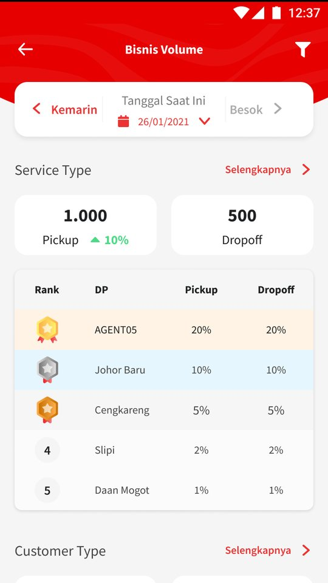
Solution 2 · Network reports
User storyAs management, I want volume, delivery, fees and service level by drop point, service type and customer type, so that I can find the weak spot, not just the total.
Each module follows the same pattern: today against yesterday, a top-5 ranking, a 7-day trend and a filter. Business volume, delivery, fees and profit, operation quality, timeliness and SLA all read the same way.
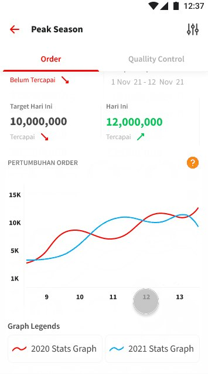
Solution 3 · Peak season
User storyAs management, I want targets and forecasts from the same period of the last three years, so that I know during the peak whether we are on track.
Each peak (for example 9.9 or 12.12) is set up with its dates and targets. The report compares target, forecast and actual orders and pickups, shows growth against last year, and counts down to the end of the peak. Past peaks stay available as history for review.
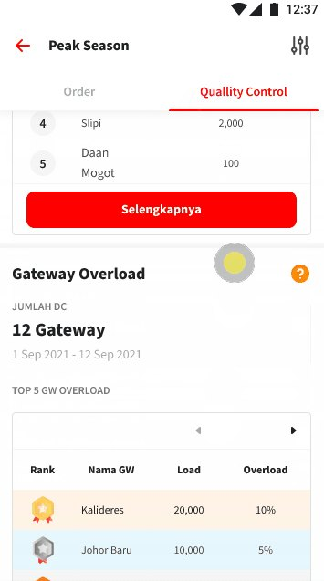
Solution 4 · Peak quality control
User storyAs an operations lead, I want to see unpicked orders and overloaded gateways and DCs, so that I can send help before parcels get stuck.
Quality control lists unpicked and undelivered orders, gateway and DC overload, and a top-5 of the drop points under most pressure, so help goes where it is needed first.
Solution 5 · Franchise partners · 中文
User storyAs headquarters, I want reports on franchise (CP) partners, so that I can track their volume, delivery, timeliness and expansion.
CP modules cover partner volume, delivery, delivery timeliness and distribution by city, and the roadmap opened CP-level reports to partner owners. The whole app switches between Bahasa Indonesia and 中文.
Solution 6 · Security & support
User storyAs an account owner, I want OTP, device unbinding and login logs, so that company data stays safe on my phone.
Login is protected by phone or email OTP, device unbinding, login logs and a limit on simultaneous logins, with quick login by fingerprint, face or PIN. Users report bugs, data issues and report ideas from inside the app.
The product decisions that shaped JRIS, beyond the feature list.
Android led development, web followed, and iOS came later because of resources, so the product could ship in stages.
Every module reads the same way: today against yesterday, a top-5 ranking, a 7-day trend and a filter. Users learn it once.
Peaks got their own targets, forecasts and warnings, not a squeezed-in version of the daily report.
OTP, device unbinding and login logs protect company data, while fingerprint, face or PIN keep daily use quick.
I designed the user experience and wrote the product and API requirements for every screen; the J&T designer chose the colours and finalized the visual UI. All numbers are sample data from the design mockups.
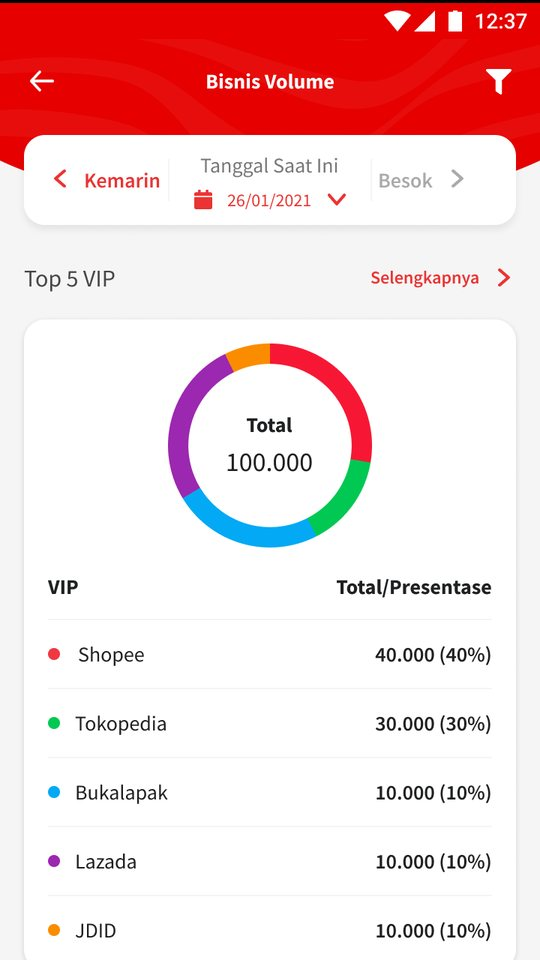
Customerstop VIP platforms and sellers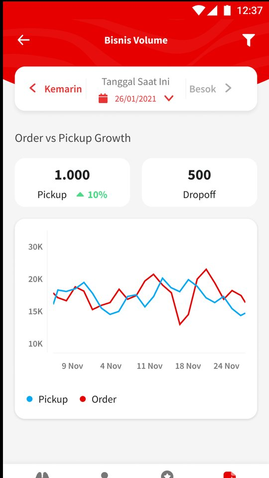
Growthorder against pickup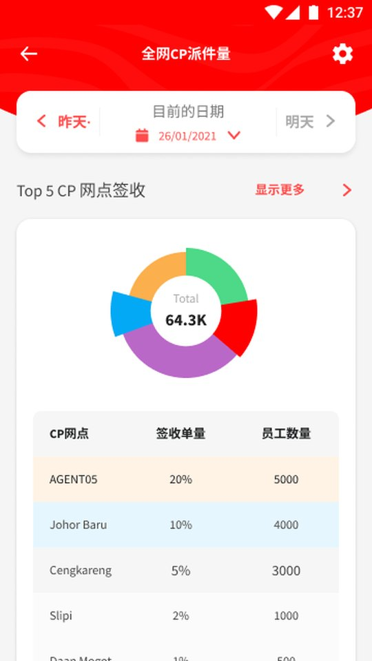
CP delivery · 中文signed parcels, COD and DFOD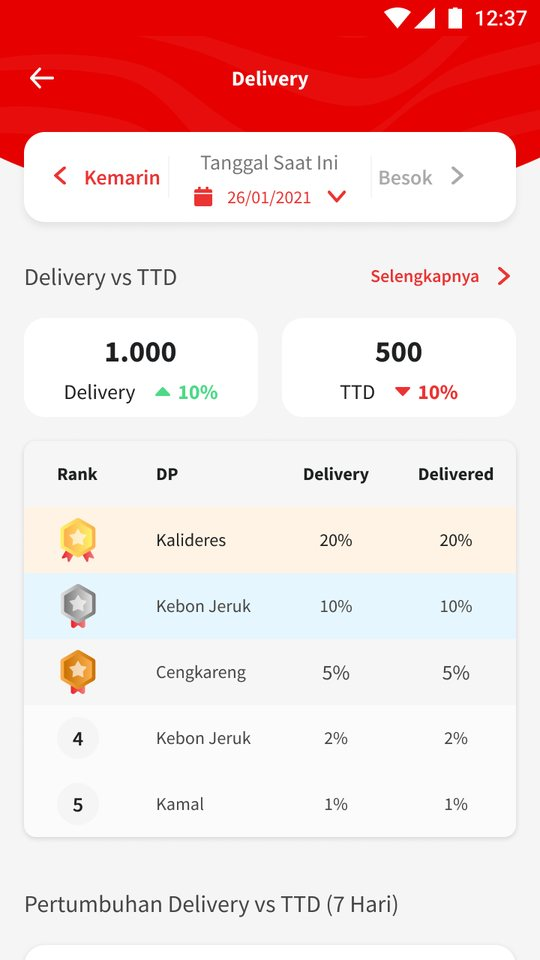
Deliverydelivery against delivered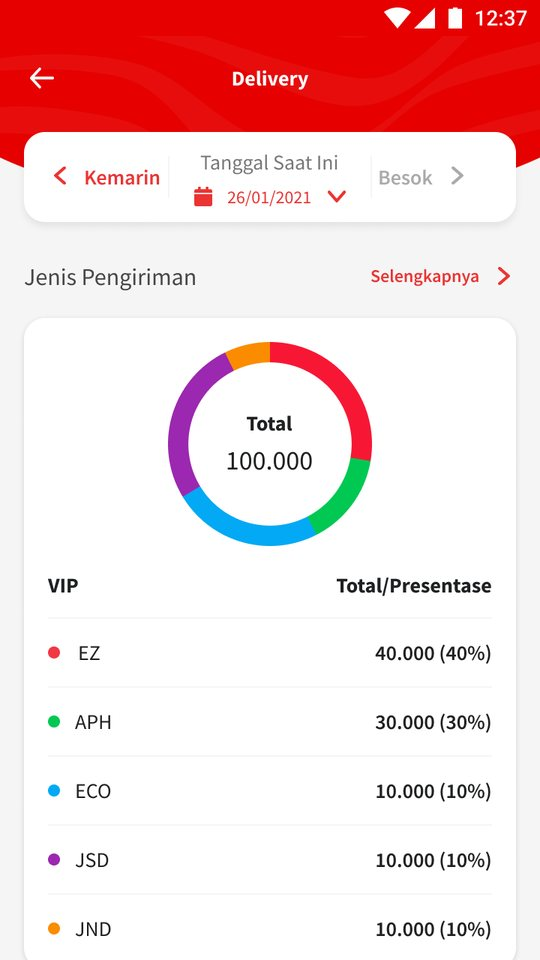
Delivery typesservice and package mix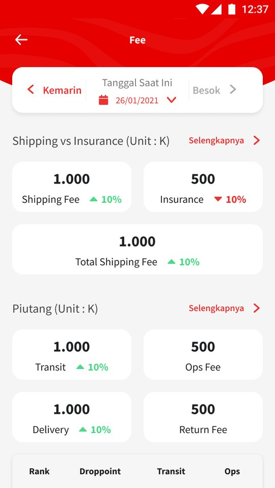
Feesshipping, insurance, receivables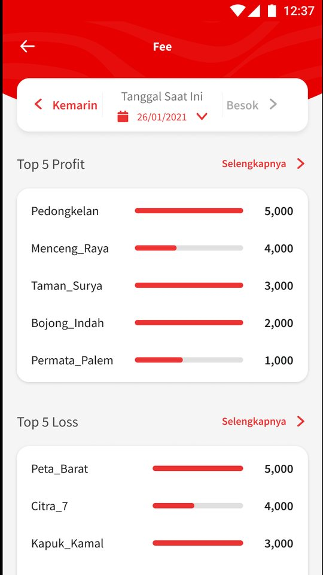
Profit rankingtop profit and loss points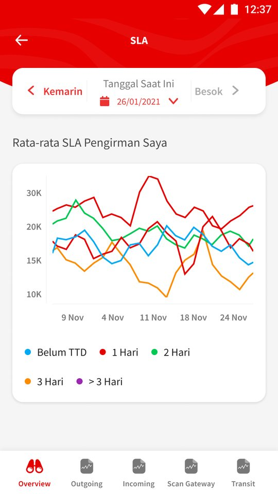
SLAdelivery SLA by days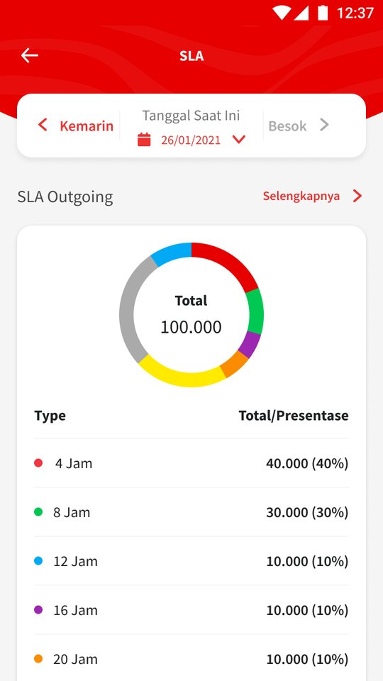
SLA outgoinghours to dispatch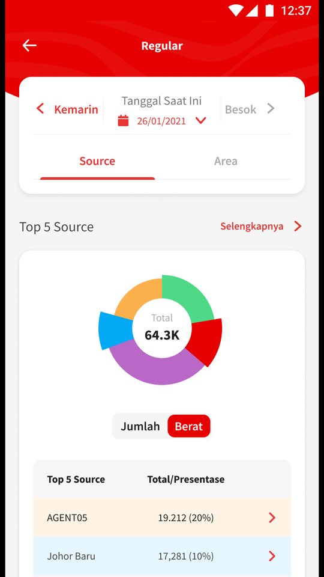
Regular orderstop sources and areasPeak-season health monitoring became a key indicator for planning staff for the next peak.
Business PMO · Tuntun Sekuritas · 2025
Requirements from several teams, one release train, and no shared picture of what was ready. I built the board, the rules and the weekly rhythm that turned it into one plan. Late deliveries dropped by 70%.
Teams could not see all requirements, PRDs and their status in one place, so a release date was set before anyone knew what was ready.
One requirement table with a view for each audience, a submission SOP with a two-month MRD rule, and a weekly review that looks three versions ahead.
Late deliveries dropped by 70%, and slips showed up weeks before release instead of on release day.
Marketing, trading, funds and product all fed requirements into the same app releases. Each team tracked its own list in its own way, and IT and QA only saw a requirement once a PRD reached them. A release could be planned around requests that were still ideas.
Give every team one shared timeline without adding meetings, make “approved” mean something you can check, and surface a late MRD or PRD while there is still time to move scope, not on release day.
"How might we let every team see, in one place, what is going into each release and what is late, early enough to change the plan instead of the date?"
Every requirement lives in one table with its team, status, target version and deadlines.
The go-live date sets the MRD and PRD deadlines, not the other way round.
A sign-off has a timestamp and an approver, per version, inside the document.
One weekly review replaces ad-hoc reminders and side conversations.
Every requirement moves through the same seven stages, and the board shows where each one is.
Solution 1 · The board
User storyAs a product director, I want every requirement with its team, owner, links and deadline in one view, so that I can see what is late before it is late.
I built the Business Timeline in DingTalk's AI table. There is one requirement table, grouped by target version and filterable by department. Each audience gets its own view of the same rows: business teams see their requests, product works the PRD update view, IT and QA work the IT & QA update view, and leadership reads the live update view and the quarterly dashboards. Labels are bilingual, English and 中文, so every team reads it in its own language.
Solution 2 · The SOP
User storyAs a business team, I want clear submission rules and a schedule, so that our requests arrive complete and on time.
The business requirement SOP (业务需求规范) sets two rules. Timing: an MRD is submitted and emailed for confirmation two months before its release. For a 30 June go-live, the MRD is in before 30 April. Confirmation: each requester checks with the approvers whether their requirement needs leadership sign-off. Every review carries a timestamp, and a requirement confirmed more than once records each version's confirmation and date in the MRD itself.
Solution 3 · The rhythm
User storyAs a project owner, I want one fixed moment to raise and confirm requirements, so that I don't have to chase people across chats.
Every Wednesday morning the business teams meet to sort the week's requirements into small and large, set their priority, and confirm that the requirements for the next and next-next versions have passed review. A standard email with the same four topics goes out each week, so anyone who missed the meeting reads the same agenda. When an MRD struggles to become a PRD, the product manager joins to resolve it in the room.
Each version has its own timeline document with the MRD deadline, the PRD-to-IT deadline and the target release. When a date moves, the doc records the new date, the reason, and exactly which requirements are holding it up.
Logistics platform · J&T Express · 2021 – 2023
J&T's key-account clients place orders, print waybills, track parcels and settle bills on the VIP Platform. As product manager I led its full rebuild without stopping the clients already shipping on it: core workflows first, then billing, tracking, self-service and account management, with clients moved over phase by phase.
The VIP Platform needed new menus and a new framework, bulk orders needed reliable validation, and finance still reminded each VIP client by hand to pay.
Prioritized the rebuild into phases, specified each module down to its field rules and messages, owned UAT against those rules, and moved clients over without a hard cutover.
A platform serving 24,892 active VIP clients by Dec 2022. Clients manage orders, tracking and bills themselves, and check payment status and pull reports instead of waiting for finance to remind them.
VIP clients ship in volume, often through sub-accounts and on behalf of dropshippers. They need to enter or import orders, print waybills, follow parcels and reconcile COD and monthly bills. Payment follow-up relied on finance staff contacting each client by hand.
Rebuild the whole platform while clients kept shipping on the old one, stop bad data at import with messages a client can act on, and make every screen work in three languages.
A December 2022 export of live VIP accounts shows clients shipping from 430 recorded origin locations, from Sumatra to Maluku. With clients this widely spread, clear self-service matters.
Java
Tangerang · Bandung · Jakarta
Also Bogor, Depok, Serang, Cirebon and Salatiga.
"How might we let a key account run its shipping and billing on its own, without slowing down the clients already shipping every day?"
Clients find orders, parcels and bills themselves.
Every failed row says what to fix and can be fixed in place.
Each account sees only what it should, and activity leaves a trace.
Old and new run side by side until clients have moved.
Rebuilding everything at once would have put clients' daily shipping at risk. So I put the workflows clients use every day first, and added billing, visibility, service and security on top. I planned these first five phases in 2021, shown with their planned dates; all of them launched. Work continued in further phases: the release log reached Phase 16 by mid-2022, and the V1.0 product overview was documented in June 2022.
Each decision answers a business problem, not just a feature request.
Problem: clients ship every day, so a broken switch-over stops their business.
Decision: run old and new side by side and move clients feature by feature.
Problem: finance reminded each VIP client by hand, and routine questions went through J&T staff.
Decision: let clients see bills, payments and parcels and pull reports themselves.
Problem: one bad row in a 1,000-row file means wrong waybills or a full re-upload.
Decision: rules per field, errors on the exact row and column, and failed rows fixed in place.
Problem: main accounts, sub-accounts and dropshippers share one client's data.
Decision: permissions per menu, watermarks, logs and encrypted contact data.
Problem: the platform and the VIP App could drift apart.
Decision: both read from the VIP Admin Console, with shared functions aligned with the app's PM.
Problem: an unclear error in the wrong language becomes a support call.
Decision: review every message, status and button in all three languages.
Solution 1 · The platform
User storyAs a VIP client, I want to create, print, track and reconcile my shipments in one place, so that I don't depend on J&T staff for routine work.
The first phase rebuilt the menus and framework: 7 modules and 14 functions, from login and dashboard to order input, import, tracking, monthly bills and permissions. Order management shows whether each order was picked up, delivered, signed, returned or voided. Later phases built on that base.
Solution 2 · Order import
User storyAs a seller importing many orders, I want to see exactly which rows failed and why, so that I can fix them without re-uploading everything.
A client imports up to 1,000 rows from an Excel template. I wrote the rules for each field: what is required, valid formats and lengths, what gets cleaned automatically, and the exact message for each failure. Failed rows go to their own tab, where they can be edited and saved. Rows that already succeeded are locked.
Solution 3 · E-commerce binding
User storyAs a client working with sellers and e-commerce platforms, I want those J&T shipments in my VIP account, so that I can monitor everything in one place.
Some key accounts also ship through sellers and e-commerce platforms. With e-commerce binding, a client enters the registered e-commerce name, phone number and waybill source. Once bound, orders placed on those platforms and shipped with J&T appear in order management, and a source filter separates them from VIP waybills.
Solution 4 · Bills & payments
User storyAs a VIP client, I want to see what I owe and what I have paid, and generate my own reports, so that I don't wait for a reminder.
Finance staff used to remind every VIP client to pay. With the key-account and finance teams, I delivered payment monitoring and reports clients generate themselves. Most VIP clients pay monthly, so the monthly bill report shows paid and unpaid amounts, discounts and write-offs, plus the waybills behind each month. Clients can also receive e-bills by email, set from the app: automatically (daily, every Monday or on the 1st of the month) or manually for a date range. I also defined COD billing, a COD chart on the dashboard and notices for each bill change, so a client always knows why a total moved.
Solution 5 · Access & data
User storyAs a main-account owner, I want to control what my sub-accounts can see and approve what they upload, so that my customers' data stays in the right hands.
Main accounts set permissions for their sub-accounts. On-screen data carries a watermark with the client code and date, including in pop-ups, without covering any text. For customer documents I specified a review flow: a user uploads, the main account checks or rejects, a rejected item can be edited and resubmitted, and a report shows the counts. Sender and recipient contact data is also protected with encryption.
Solution 6 · Three languages
User storyAs an Indonesian client, I want every message in clear Bahasa Indonesia, so that I never have to guess what an error means.
I work in Bahasa Indonesia, English and Mandarin, so I reviewed the product in all three. That meant the 8 tracking events, import errors, buttons and hints. Testing caught Mandarin messages leaking into Indonesian screens, clipped labels and awkward translations, and I tracked each one until it was fixed.
Solution 7 · Migration
User storyAs a client shipping every day, I want to try the new platform without losing the old one, so that my orders never stop.
Old and new ran side by side. A button on the old login page took clients to the new platform. Features moved deliberately: when a plugin problem affected COD watermarks in Fast Print, I hid Fast Print on the old platform and pointed clients to the new one. Changes were logged per phase in Bahasa Indonesia and Mandarin, so business and engineering read the same record.
Solution 8 · VIP Admin Console
User storyAs the product owner, I want both products reading from one console and to see who uses what, so that they stay consistent and the next phase comes from evidence.
My project was the VIP Platform, and the VIP App had its own product manager. I also handled the VIP Admin Console, the data source for both products, and coordinated with the app's PM to make sure the functions they share work correctly on each. Once launched, it maintained VIP client activation, with 24,892 active clients in Dec 2022. It also shows active users by channel and account type, most visited menus, usage by time of day, session length and top clients, plus a language manager, feedback replies and logs.
I didn't hand requirements over and wait. I wrote the test cases, ran them on UAT and recorded what actually happened next to what should happen.
Illustration only: a sample of fields and conditions, colours are not actual results
A cross-functional team delivered this. Here is where my ownership began and ended.
Phased roadmap and priorities, requirements and Jira tickets, field-level import rules, test cases and UAT, wording in three languages, the migration plan and the VIP Admin Console.
Key-account and finance teams on billing and payments, the VIP App's PM on shared functions, and business and engineering through phase-by-phase release logs.
1 designer, plus web, iOS, Android and 2 backend engineers, who designed and built the product from those requirements.
The strengths this project shows, each backed by the work above.
Turned a full platform rebuild into phases with clear scope, status and owners.
Specified behaviour down to each field, limit and error message, before and during development.
Wrote test cases, ran UAT and followed each issue until it was fixed and retested.
Worked at the level of API calls, backend fields and logs, so engineers got precise requirements.
Worked across Bahasa Indonesia, English and Mandarin, connecting business, finance, design and engineering, and aligning shared functions with the VIP App's PM.
Moved clients in steps and built in permissions, watermarks, logs and data protection.